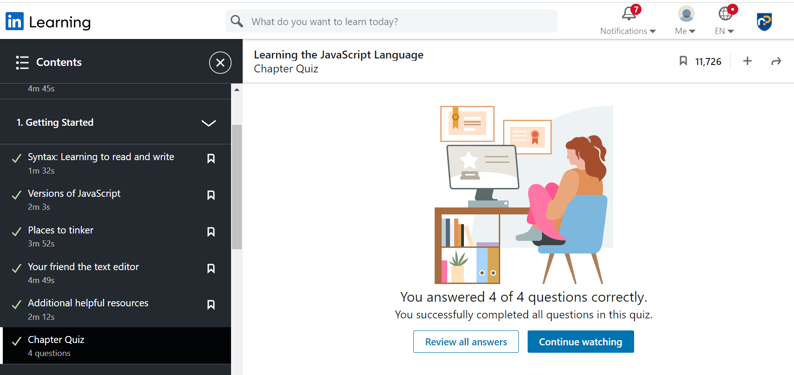
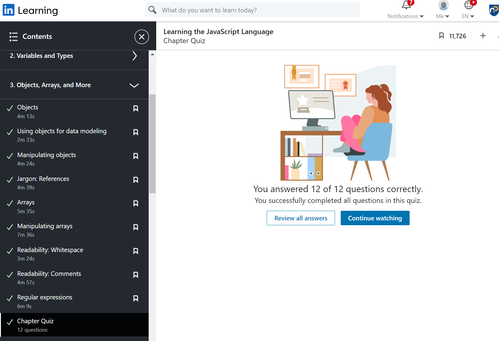
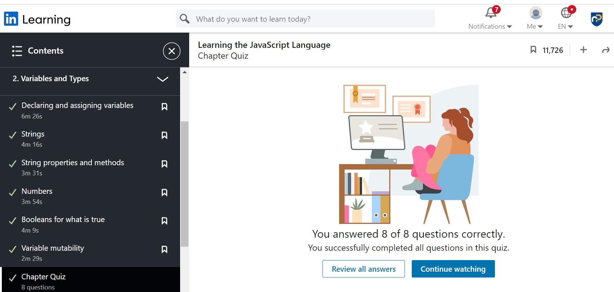
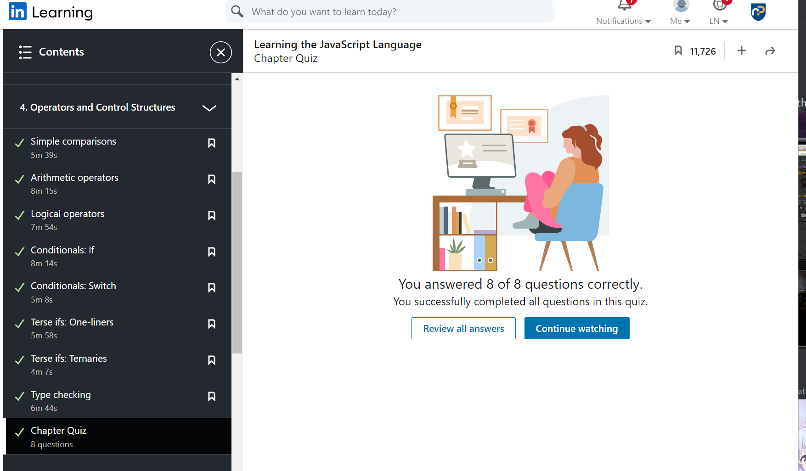
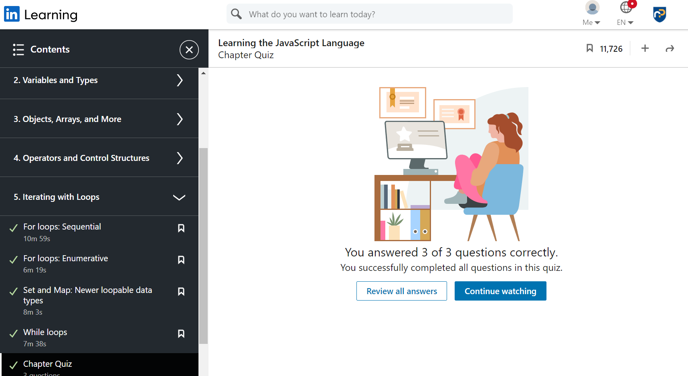

Week 1 Dev Blog
Intro to html

- I learned what makes a good website
- I learned about the basic html syntax
- I made a web page
Week 3 Dev Blog
Advanced CSS, Forms and Positioning
What I have learned this week:
- How to create forms in html with input validation.
- Descendant selectors are used to select specific elements on a webpage.
- Grouping selectors are used to select all elements of a given group. E.g h1(...)
- Specificity allows browsers to determine the CSS rule that applies, with priority given to the latest rule.
- The !important keyword will override specificity and source order.
- What a flexbox is and the different syntax to format content inside one.
Week 4 Dev Blog
Responsive Images
What I have learned this week:
- Responsive images will automatically resize based on screen size.
- To create a responsive image, relative units such as % or em are used so that the image will resize based on the context around it.
- Images can be forced to not scale beyond a certain size using max-width and width.
- 'srcset' allows images of multiple resolutions to be set to load at certain screen sizes.
Week 5 Dev Blog
Basic Javascript
Linkedin quiz results





What I have learned this week:
- How to declare variables and their types. E.g strings and numbers.
- Creating objects which are variables that can store multiple values.
- Using arrays to store a large quantity of values, as well as searching for values in arrays.
- Operators like +,-,*,/ allow for mathematical operations to be performed.
- Using loops to iterate through data or processes